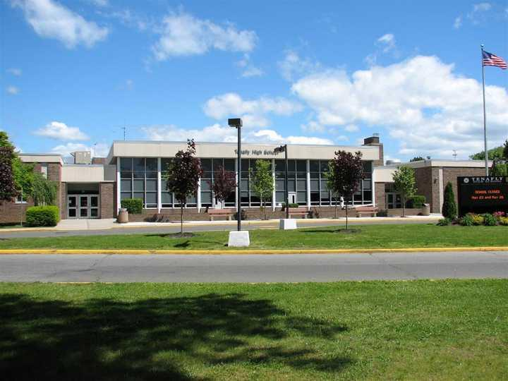

1. 주요 지역과 학교
· 밴쿠버 (BC주)
한국 가정이 가장 많이 거주하는 지역입니다. 공립 교육청(버나비·코퀴틀람 교육청 등)이 국제학생을 받으며, 사립으로는 세인트조지스, 크로프턴 하우스, 웨스트포인트 그레이 등이 있습니다.
· 토론토 (온타리오주)
어퍼캐나다 칼리지(UCC), 브랭섬홀, 헤이브가일, 세인트앤드류스 칼리지 등 명문 사립과 공립 교육청 프로그램.
· 캘거리·몬트리올 등
앨버타·퀘벡 등 다른 주에도 한인 가정이 있으며, 주마다 커리큘럼이 다릅니다.
국제학교 캠퍼스 전경
2. 캐나다 교육 구조 — 주마다 다릅니다
· 온타리오 (토론토)
OSSD(Ontario Secondary School Diploma) — 졸업을 위해 30학점, 봉사활동 40시간, 문해력 시험(OSSLT)을 요구합니다. 수학은 Functions(11학년) → Advanced Functions·Calculus and Vectors(12학년) 순.
· BC주 (밴쿠버)
Dogwood Diploma 체계. 수학은 Math 8·9·10 → Pre-Calculus 11·12 → Calculus 12 순으로 진행됩니다.
· AP·IB
많은 공립·사립 학교가 AP 또는 IB를 함께 제공합니다. 미국 대학 진학을 염두에 둔다면 AP 이수가 유리합니다.
· 대학 진학
캐나다 대학(UBC·토론토대·워털루 등)은 12학년 주요 과목 성적을 중심으로 선발합니다. 즉 11~12학년 내신이 결정적입니다. 일부 학과는 보충 원서(에세이)를 요구합니다.
3. G1~G12 학년별 준비 로드맵
영어 리딩·라이팅 기초와 수학 영어 용어. 조기유학으로 온 아이는 ESL 단계를 빠르게 벗어나는 것이 목표입니다.
수학은 Math 8·9(대수·함수 기초 = 알지브라·지오메트리 개념). 영어는 에세이 구조 훈련 시작. ESL을 벗어나 정규 영어반에 들어가는 것이 중요합니다.
내신이 본격적으로 쌓이기 시작합니다. 수학은 Math 10·Pre-Calculus 11(BC) 또는 Functions(온타리오). 과학은 물리·화학·생물 분화.
대학 진학을 좌우하는 학년. 12학년 주요 과목 성적이 곧 합격 여부입니다. Pre-Calculus 12·Calculus 12(BC), Advanced Functions·Calculus and Vectors(온타리오), AP·IB 병행. 영어는 문학 분석 에세이와 원서 에세이.

국제학교 캠퍼스
4. 과목별 준비 방법 — 전 과목 관리
Math 8·9·10 · Pre-Calculus 11·12 · Calculus 12 · Functions · Advanced Functions · Calculus and Vectors · AP Calculus AB/BC · IB Math AA/AI. 미국식 알지브라·지오메트리 개념과 영어 용어를 함께 잡습니다.
ESL 탈출 · 리딩 · 에세이 라이팅·첨삭 · 문학 분석 · OSSLT(문해력 시험) 대비 · AP English · 대학 원서 에세이 · 면접(인터뷰).
물리·화학·생물 (Science 10, Physics/Chemistry/Biology 11·12, AP·IB Sciences). 개념+영어 용어, 랩 리포트 관리.
프랑스어(캐나다 공용어)·스페인어. 경제·경영, 컴퓨터과학. 한국어 유지와 귀국 대비 한국 교과 병행도 가능합니다.
5. 입학·편입 준비
· 공립 교육청 유학 — 지원 시 영어·수학 레벨 테스트를 봅니다. 결과에 따라 ESL 단계가 정해지는데, ESL에 오래 머물면 정규 과목 학점을 못 채워 졸업이 늦어질 수 있습니다. 도착 전 영어 준비가 중요한 이유입니다.
· 사립·보딩스쿨 — SSAT, 영어 에세이, 인터뷰(면접), 추천서.
· 편입 — 학년 중간 편입 시 이전 학점 인정 여부를 확인해야 합니다. 12학년 편입은 졸업 요건 충족이 빠듯할 수 있습니다.

국제학교 캠퍼스 전경
6. 시차와 화상과외
밴쿠버는 한국과 16~17시간, 토론토는 13~14시간 차이가 납니다. 현지 방과 후 시간이 한국의 이른 아침대에 해당해, 고정된 시간에 규칙적으로 수업을 진행합니다. 개념은 한국어로 정확히 잡고, 수학 영어 용어와 에세이 첨삭을 함께 관리합니다.